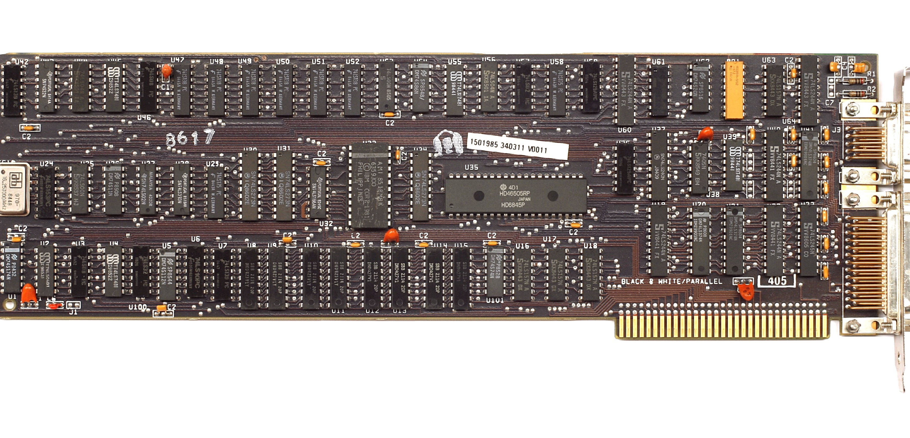
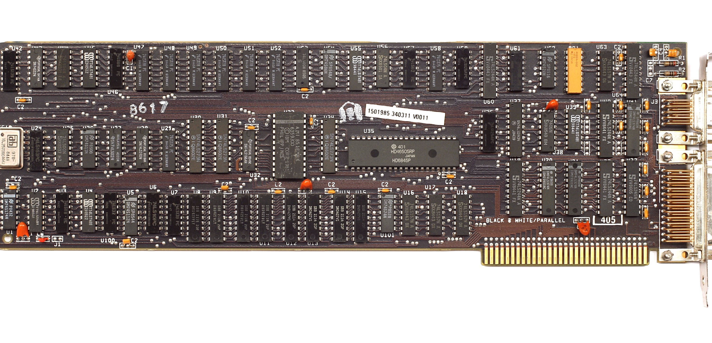
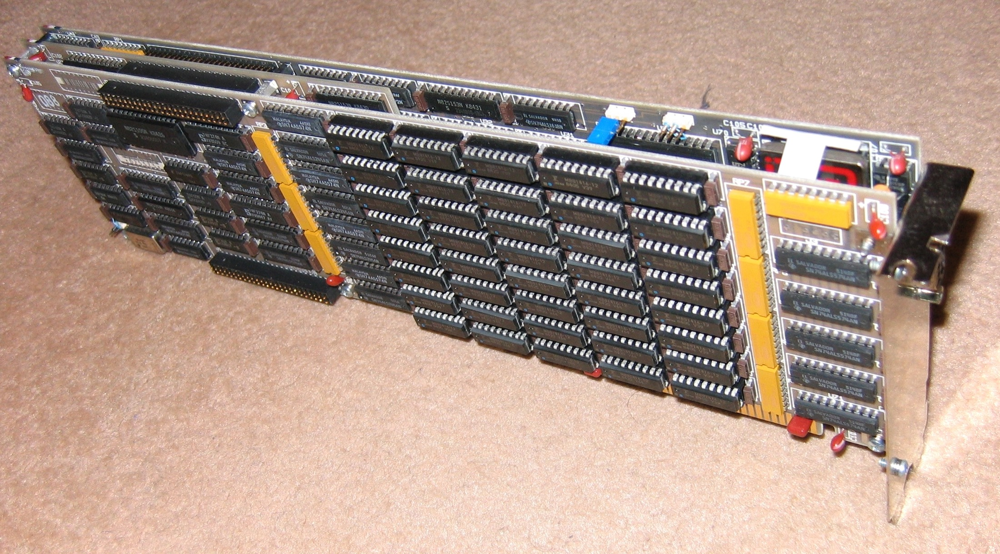
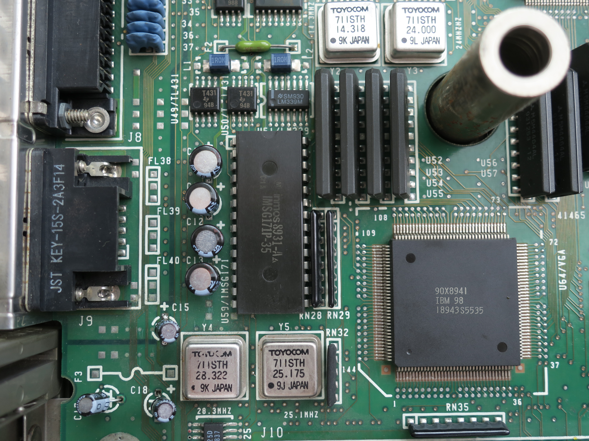

1981
IBM released their first two video cards the Monochrome Display Adapter (MDA) and Color Graphics Adapter (CGA).
A video card (also called a display card, graphics card, display adapter, or graphics adapter) is an expansion card which generates a feed of output images to a display device. It translates binary data from the CPU then processes it into a picture to be visually seen by the computer user. The CPU sends information to the video card about the texts or images used by the different computer programs. The video card creates those things using the pixels on the computer screen and the processed information will turn into texts or images and is sent to the monitor using a cable.
| Component name | Functionality | Component |
|---|---|---|
| Graphics Processing Unit(GPU) |
|
|
| Heat Sink |
|
|
| Video Bios |
|
|
| VRAM |
|
|
| Ramdac |
|
IBM released their first two video cards the Monochrome Display Adapter (MDA) and Color Graphics Adapter (CGA).
Van Suwannukul developed Hercules Graphics Card. It both supported MDA compatible high resolution text mode and a monochrome graphics mode at the same time.

IBM introduced Professional Graphics Controller (PGC) and Enhanced Graphics Adapter (EGA). PGA was very advanced for its time as it can support 2D and 3D graphics acceleration for Computer Aided Design applications and offered higher resolution and color depth than EGA.
IBM released video Graphics Array (VGA) which offered 640-480 / 16 (resolution/color) graphics mode and 256 KB of video memory.
SVGA was created by NEC, along with other corporations including ATI Technologies and Western Digital. SVGA enabled graphics display resolutions up to 800×600 pixels, 56% more pixels than VGA.
2D and 3D cards were first released to the public which had the ability to illustrate multidimensional images. These were mainly developed by Creative, Matrox and ATI.
Voodoo graphics chip was released which was widely accepted in gaming. It had 3D effects like Z-buffering, mip mapping and anti aliasing. Following Voodoo, came more 3D video cards from NVIDIA which are Voodoo2, TNT and TNT2.
ATI video card market has been reined by ATI and NVIDIA with their Radeon and GeForce lines respectively.